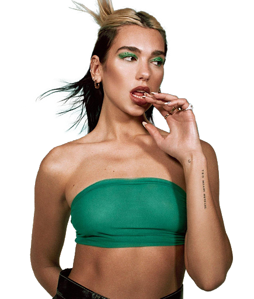

Divas!

Ariana Grande-Butera is an American singer and actress. She possesses a four-octave vocal range and whistle register, both of which have earned Grande praise from music critics. Born in Boca Raton, Florida, Grande began her career at age 15 in the 2008 Broadway musical 13.
Mariah Carey is an American singer-songwriter, record producer, and actress. Known for her five-octave vocal range, melismatic singing style, and signature use of the whistle register, she is referred to as the "Songbird Supreme" by Guinness World Records.
Beyoncé Giselle Knowles-Carter is an American singer, actress and record producer. Born and raised in Houston, Texas, Beyoncé performed in various singing and dancing competitions as a child. She rose to fame in the late 1990s as the lead singer of Destiny's Child, one of the best-selling girl groups of all time.
Stefani Joanne Angelina Germanotta, known professionally as Lady Gaga, is an American singer, songwriter, record producer, actress and businesswoman. She is known for her consistent image reinventions and versatility in both music and entertainment.

Miley Ray Cyrus is an American singer, songwriter, actress, and record producer. Noted for her distinctive raspy voice, her music spans a range of styles, from pop and country pop to hip hop, experimental and rock.
 Dua Lipa is an English singer and songwriter. After working as a model, she signed with Warner Music Group in 2015 and released her self-titled debut album in 2017. Future Nostalgia, her #1 UK sophomore album,is one of the best reviewed albums of 2020 and debuted in the top 5 of the Billboard 200 Album Chart.